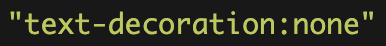
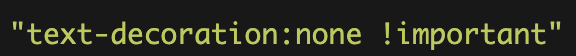

The Copycat Website Project requires students to copy and build a website with their own knowledge they have on HTML and CSS.
In my situation, I decided to do Pupilpath, a very common website used by teachers, parents, and students. This website is a platform to keep track of the student's grades as well as update their parents on how well they are doing.
The moment I saw Pupilpath was going to be an option, I was so excited for it. I knew it wasn't going to be easy but fairly difficult although it was classified as the much easier ones.
After getting more in-depth with CSS a few weeks ago, I began to struggle to understand the fundamentals and basics of CSS. It no longer was simple but instead had so many numbers and signs. I knew right away Pupilpath was going to be a good option for me.
As I began to work in this project I immediately encountered problems. I wasn't able to get my image smaller without ruining the aspect of it. This was resolved by simply asking one of my fellow piers next to me. It didn't end there though, soon enough I encountered another problem. This time I couldn't get the underlines to appear. In my HTML you will see I have:
The text will be presented without any underlines. When I tried to make them appear while hovering over them it didn't work. I spent several hours researching and doing trial and errors until I came to the realization I needed to overwrite what I had already set. Therefore, in my CSS you will see:
This allows the text to have an underline while hovering on top of it even though its being told not to do so. In other words, it over writes it.
What I learned off this whole project was use your resources around you. Had it not been for a simple google search I would've never found out how to use: !important. I ended up learning how it completely overrides my other code.
Not only is the skill of communication and googling a question important in SEP but in its also important anywhere in our lives. It could be useful for other classes, it could be for work and with a simple google search it may save you countless hours. We are in a time that technology has taken over and we should take advantage of it.
Pupilpath.com: